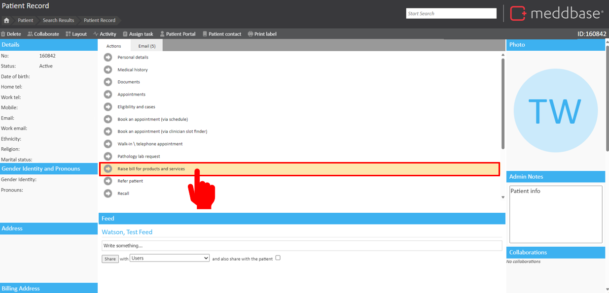
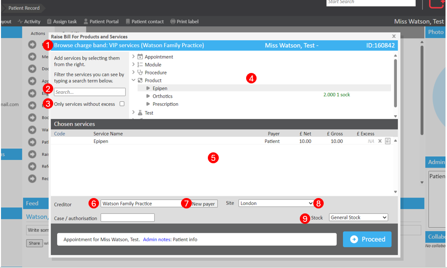
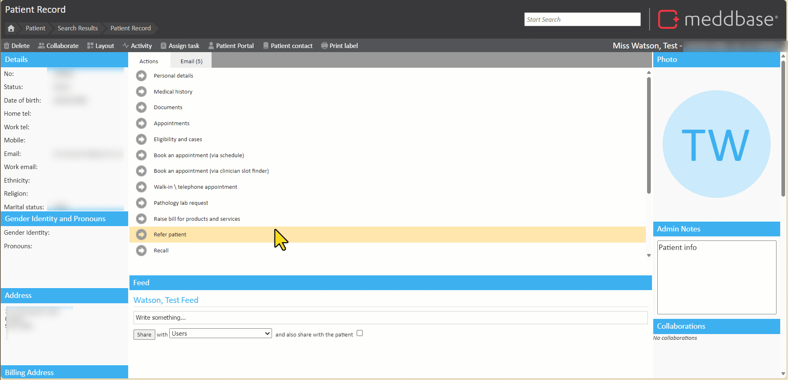
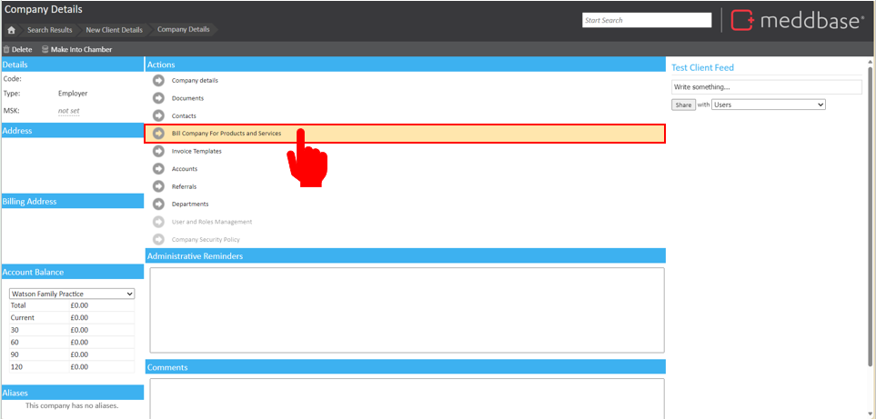
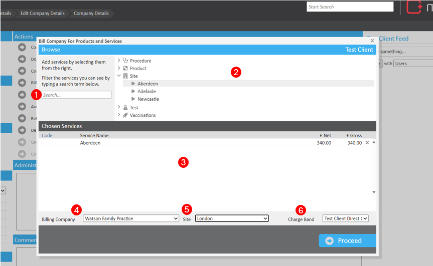

In Meddbase, it is possible to raise a bill for products and services consumed by a Patient or directly to a Company outside the context of an appointment. This allows the direct charging of products or services which will generate where invoices based on the billing rules configuration.
For support with billing rules, please follow this article.
What is the purpose of this article?
The purpose of this article is to explain how to raise a bill for products and services to a patient or directly to a company outside the context of an appointment.
This article is split into the following sections:
Raising a bill to a patient
Raising a bill to a company
Raising a bill to a Patient
To raise a bill for products and services, navigate to the Patient Record Home page and select Raise bill for products and services.

This will bring up the service picker window. On this screen, the products and services shown are dependent on the PreferredPayer the patient has set on their Demographic Record.

From this window, you can:
View the Current Patient Charge Band - This shows the name of the Charge Band the patient is on and who the payer is for the current bill. The products and services available on this page will be determined by this Charge Band.
Search for Services - Search for services by name or code to quickly locate the required item.
Only Services without excess - Tick to only show services which don't require an excess.
Service Picker - View all products and services available to bill. These services are split out by their type.
Chosen Services - When selecting a service from the service picker, a line item will be added to this section. Each line will display the service code,name, payer, Net amount, Gross amount and any excess. If you have added a service in error, there is an X on the rightmost side of the line item to remove it.
Modify the price of the Net Amount or Gross by selecting the price and changing the value, pressing save once complete.
View notes on the provided service by selecting the page icon next to the X.
Creditor - Change the creditor on the invoice. Only internal-type companies will be selectable.
New Payer - Change the debtor and or Charge Band. Note, changing either of these options will alter the products and services available to bill for due to billing rules configuration. This also has the potential to raise multiple invoices depending on having different debtor types per service item.
Site - Specify the site where this bill was raised. This optional step enables more detailed reporting for invoices generated outside of the appointment booking process, providing a clearer picture for multi-site operations.
Stock definition - If using stock control, this control will become available. Select the stock definition (location) you wish to dispense a product or vaccine from.
The video below guides you through the process of raising a bill from the Patient record home page.

Raising a bill to a Company
To directly charge a company for a product or service, navigate to Find Company > Company Details > Bill Company For Products and Services.

The company must have at least one charge band of the type Company Only in order to bill for products and services directly.
After selecting Bill Company for Products and Services, the service picker window will appear.

From this window, you can:
Search for Services - Search for services by name or code to quickly locate the required item.
Service Picker - View all products and services available to bill. These services are split out by their type.
Chosen Services - When selecting a service from the service picker, a line item will be added to this section. Each line will display the service code,name, Net amount, Gross amount and any excess. If you have added a service in error, there is an X on the rightmost side of the line item to remove it.
Modify the price of the Net Amount or Gross by selecting the price and changing the value, pressing save once complete.
View notes on the provided service by selecting the page icon next to the X.
Billing Company- Change the billing company on the invoice. Only internal-type companies will be selectable.
Site - Specify the site where this bill was raised. This optional step enables more detailed reporting for invoices generated outside of the appointment booking process, providing a clearer picture for multi-site operations.
Charge Band - View or change the Charge Band to modify the products and services shown.
Generating an invoice
Once the relevant products and services have been added, click Proceed to confirm and raise a bill for those services. This will present a dialogue box confirming an invoice has been raise as a result. This invoice can be handled by clicking on the Invoice listed, or at a later date from the accounts tile.